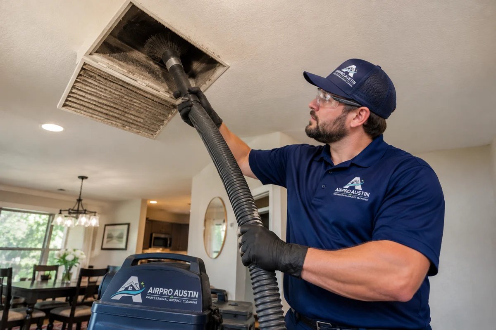
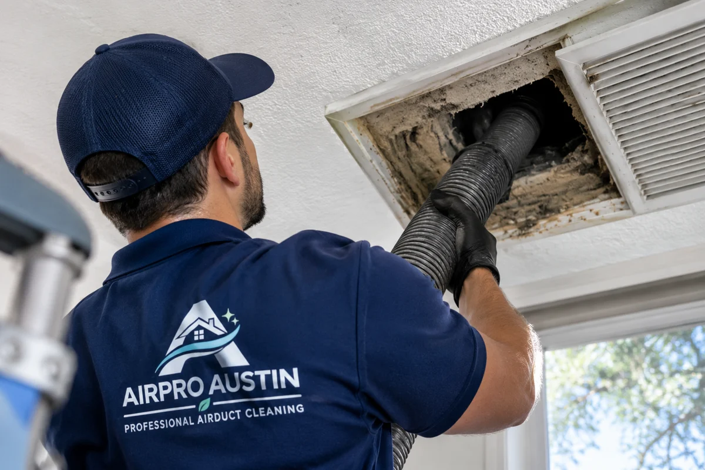
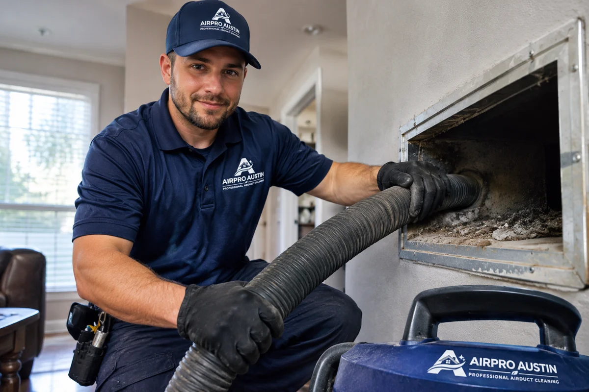
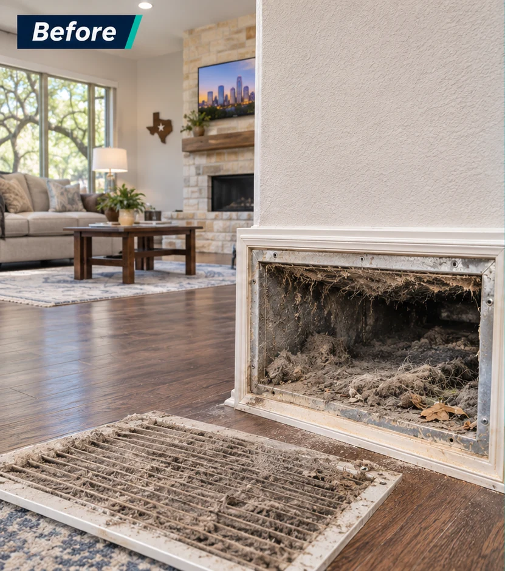
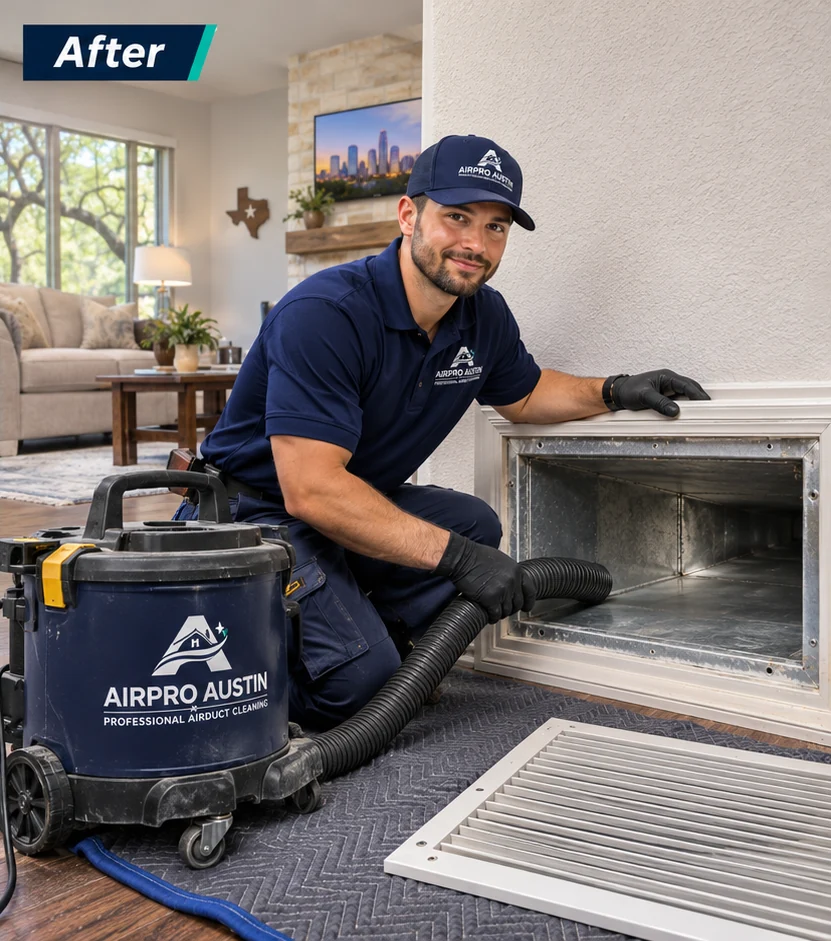
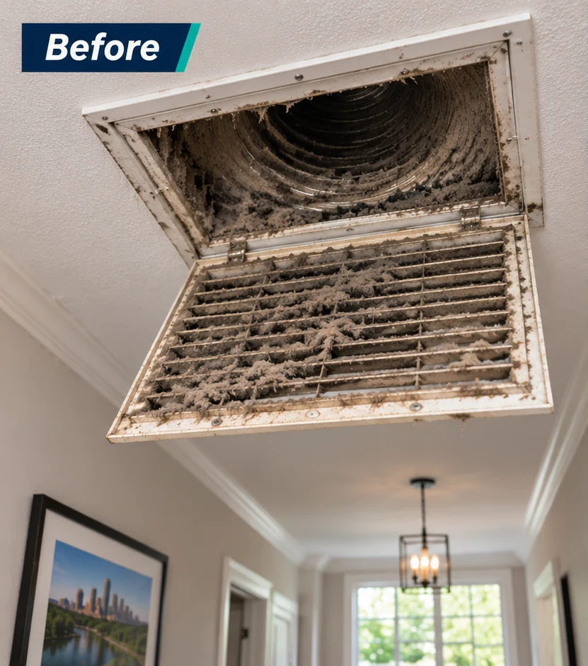
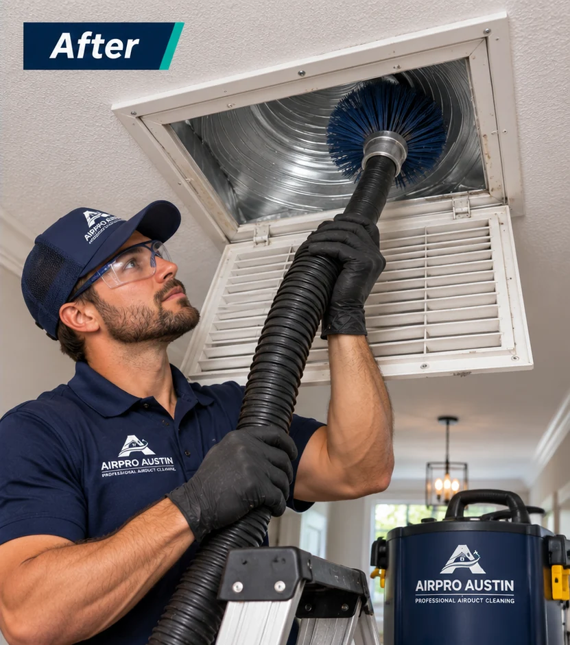
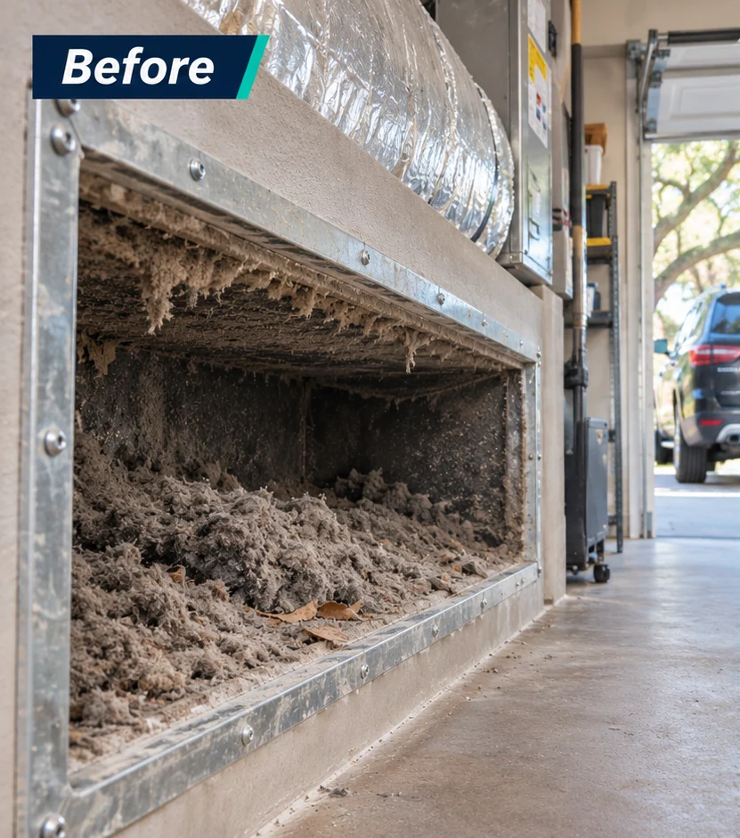
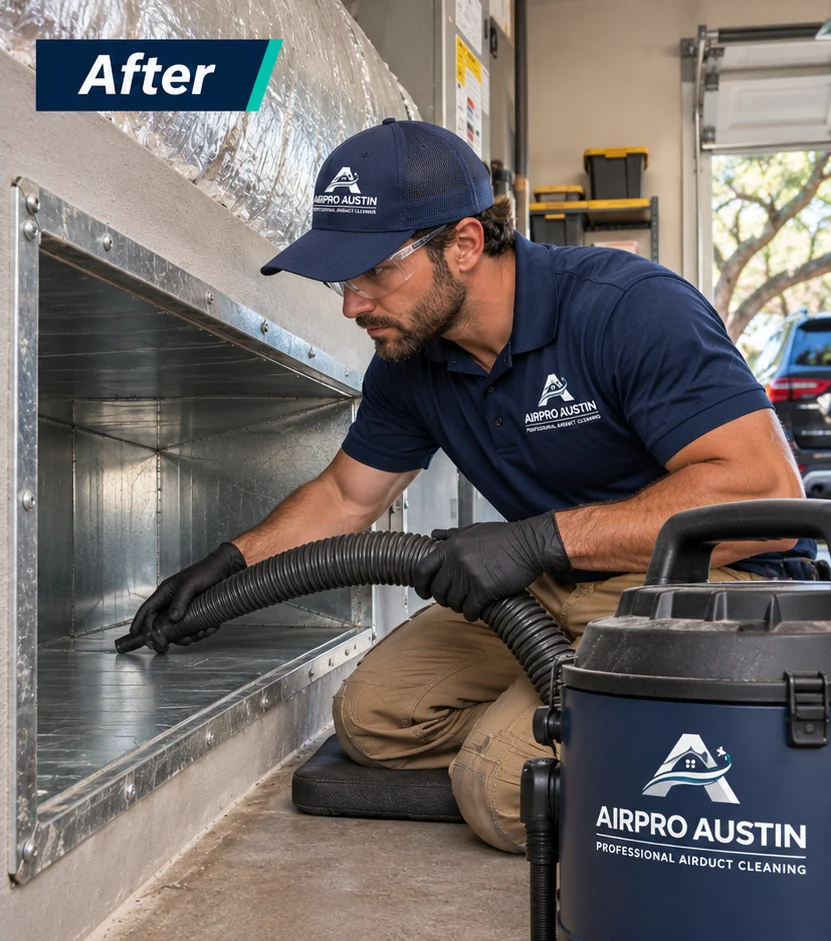

Debris Inside a Vent
If you can see buildup past the grille, ask a technician to check how far it extends.
Dust Around Your Air Vents?
Dust near a vent can have several causes. We inspect your ductwork and clean accessible supply and return vents so you can see what was cleaned.


Warning signs
An inspection can help you find out what’s causing these problems.
If you can see buildup past the grille, ask a technician to check how far it extends.
If vents were uncovered during construction, dust may have settled inside.
If dust comes out when the system starts, have the filter and nearby ductwork checked.
A musty smell can point to a moisture issue. An inspection can help trace the source.
See What Our Google Customers Are Saying

“They were available same day. Seemed to do a very detailed cleaning. Very nice & easy to work with.”
“Roy was thorough and explained my options. He was very understanding and worked with me to get the job done. My vents are clean and it’s was an easy process.”
“AirPro Austin is very efficient and knows what they’re doing!”
“Roi made a special trip at the last minute at the end of the day, very professional. Thank you!”
“Roy knew exactly what to do”
“Great work. Prompt arrival, diagnosed the problem and fixed it same day. Would recommend for future work.”
What to expect

We check accessible vents and use a camera to show you what we find.
We clean accessible supply vents and returns. Deep cleaning can involve HEPA vacuums and rotary brushes.
We show you the before-and-after camera views and explain anything that needs follow-up.
Starting prices for basic cleaning. Your technician can recommend upgrades on-site, and you decide whether to add them.
Basic cleaning special
$199 Reg. $399
Basic cleaning of every accessible supply vent and return, plus a free camera inspection. Deep cleaning, sanitizing, and coil or blower service are quoted on-site.
Book This SpecialBasic cleaning for most single-family homes. Your technician confirms the final price before work begins.
Basic · Most popular
$99 Reg. $188
Basic cleaning of a standard dryer vent run, plus a free fire-safety and airflow inspection. Longer or roof runs, repairs, and bird guards are quoted on-site.
Book This SpecialBasic cleaning for most single-family homes. Your technician confirms the final price before work begins.
Basic bundle · Save $289
$298 Reg. $587
Whole-home air duct cleaning plus standard dryer vent cleaning and a fire-safety inspection. Add-ons are quoted on-site.
Book the Bundle · $298Basic cleaning for most single-family homes. Your technician confirms the final price before work begins.
Real Experiences Shared by Our Customers on Yelp


★★★★★
“Air ducts seem clean and I really like the UV light installed.”
★★★★★
“Roi was very friendly and did an excellent job at explaining the details of the job. Well done!”
★★★★★
“Roi and Eric worked efficiently and effectively to solve our issue. New filters and uv lights. Recommend them anytime.”
★★★★★
“Top-shelf customer support, timing, problem solving, and responsiveness.”
★★★★★
“Roi was great to work with. He explained what needed cleaning and showed us what was inside the vents. Really happy with how everything turned out.”
★★★★★
“Our dryer was taking two cycles to finish a load. They cleaned out a lot of lint, and it's been working much better since. Glad we called.”
★★★★★
“We had a lot of dust left over from remodeling. Roi and his team were careful around the house and showed us photos of the ducts. Good experience overall.”
★★★★★
“First time having our chimney cleaned in a while. The guys explained everything before starting and cleaned up after themselves. Would use them again.”
★★★★★
“Easy to schedule and they showed up when expected. Roi was friendly, answered my questions, and got the dryer vent cleaned without any issues.”
★★★★★
“Had a UV light installed in our AC system. They walked me through how it works and what maintenance it needs. Appreciate them taking the time to explain it.”
★★★★★
“Very professional from start to finish. They protected the area around our fireplace and didn't leave a mess behind. The whole appointment went smoothly.”
★★★★★
“Our gutters were packed with leaves. They cleared everything out and pointed out a section we should keep an eye on. Straightforward service.”
★★★★★
“Roi was very helpful and didn't rush through the appointment. He explained why the vent was getting clogged and answered all my questions. I'd definitely call again.”
★★★★★
“Good communication and easy scheduling. The crew showed us what they found in the ducts and explained the work before doing anything extra. No complaints.”
Assessment and Service Work
AirPro Austin inspects and cleans accessible supply and return vents in homes across Austin, including Hyde Park, Zilker, and South Lamar. We use camera views to show what we find and explain when deeper cleaning may help.


If a camera inspection shows heavy buildup deeper in the ductwork, such as dust left after a renovation, your technician may recommend deep duct cleaning. Depending on the duct material and what the inspection shows, we may use rotary brushes and HEPA vacuum equipment to loosen and collect debris.
Deep cleaning is quoted separately from the $199 basic cleaning. Your technician will show you what they found and explain the scope and price before you decide.






FIND YOUR SERVICE
Not sure what you need? Start with what you’ve noticed.
AIR DUCT CLEANING
Dust and debris can collect inside ductwork over time. We remove accessible buildup and address cleaning needs identified during an inspection.
Book Air Duct CleaningDRYER VENT CLEANING
Lint buildup can restrict airflow in your dryer vent. We remove accumulated lint from the vent line and check for airflow problems.
Explore Dryer Vent CleaningCHIMNEY CLEANING
Soot, creosote and debris can build up inside chimneys. Our cleaning service removes deposits and helps identify concerns that need further inspection.
Explore Chimney CleaningHVAC UV LIGHT
Explore UV light options for compatible HVAC systems.
Explore HVAC UV LightHVAC DISINFECTION
Learn about available disinfection treatments and how they differ from routine duct cleaning.
Explore HVAC DisinfectionGUTTER SERVICES
Explore gutter cleaning, repair, and installation options for your home.
Explore Gutter ServicesWhy Homeowners Choose AirPro Austin on Thumbtack
★★★★★
“Roi did an amazing job with my vent cleaning. He took time to explain how everything worked and did incredible work. I will use him for every yearly cleaning from here on out. 10/10 experience!!!”
★★★★★
“Roi was amazing - went above and beyond to clean a very challenging duct. Cleaned up afterward. So glad I used Airpro Austin. Highly recommend!”
★★★★★
“Roy is amazing! Knowledgeable, professional and an expert in his field. He explained every step along the way...even drew sketches of the process to clean our air ducts and all the vents. Plus, a very nice man who strives to do a great job.”
★★★★★
“Roi showed up the next day and inspected and gave us a quote. When we accepted the quote he showed up the next day to begin work.”
★★★★★
“He shared options and pricing quickly with me and was flexible to the fact that I was in between meetings while he worked.”
★★★★★
“They did a great job! Very responsive.”
★★★★★
“Roy was great and thorough. Identified the exact problem and gave me a quick estimate on time and cost. Was in and out quickly”
★★★★★
“Roy did a great job in helping with our duct cleaning. He provided detailed estimates and provided the service that is only required.”
★★★★★
“They responded right away and were able to take care of the dryer vent cleaning immediately. Will recommend for future services.”
★★★★★
“Cleaned out clogged dryer vent and reconnected it. Showed up on time and did what was needed to fix the issues shown in the photos below. Would hire again.”
LOCAL TO YOUR HOME
We clean air ducts in Austin and nearby Central Texas communities. Call to confirm availability for your address.
Before you book
Our advertised basic air duct cleaning price is $199 for eligible homes. The offer covers accessible supply and return vents with a camera inspection. Deeper cleaning, sanitizing, and coil or blower service are quoted separately. Contact us to confirm the scope for your home. airpro-austin.com
No. Cleaning a grille addresses the visible cover, while duct cleaning involves the areas behind it. A full HVAC-system cleaning can include additional components. Ask which areas your quote covers; NADCA’s cleaning-method guide explains the distinction.
Cleaning should depend on the ductwork’s condition rather than a fixed schedule for every home. Substantial debris, pests, or other confirmed contamination may justify cleaning. The EPA’s air duct cleaning guidance recommends an as-needed approach.
Not necessarily. Return grilles can collect dust during normal operation. Dust on the cover alone does not prove that the entire duct system needs cleaning. The EPA explains what conditions warrant a closer inspection.
AirPro Austin’s published estimate is two to four hours for a typical residential appointment. The actual time depends on the system and agreed work. Contact our team to confirm the expected duration for your selected service. AirPro Austin
Yes. Duct cleaning does not replace routine filter maintenance. Check your filter regularly and follow the equipment instructions for cleaning or replacement. The ENERGY STAR maintenance checklist recommends checking filters monthly.
No. Chemical treatment is not automatically needed after cleaning. Ask why a treatment is recommended and whether it suits your duct materials. Review our HVAC Disinfection service alongside the EPA’s guidance on duct treatments.
Appropriate filtration can help capture airborne particles, but controlling pollution sources and maintaining ventilation also matter. Cleaning ductwork is not a substitute for these measures. The EPA’s guide to home air cleaners and filters explains the options.
Yes. AirPro Austin advertises both basic services together for $298, subject to their service conditions. Review the Dryer Vent Cleaning service and confirm appointment availability and any additional work before booking. airpro-austin.com
Use our Contact Us page or call (512) 677-1878 to request air duct cleaning. Include your address and the concerns you have noticed. Read our Privacy Policy for information about how submitted details are handled.
Contact Us
Choose a preferred appointment time or call to tell us what you’ve noticed.
GET A FAST QUOTE 100% FREE
Choose a preferred time for your air duct cleaning.